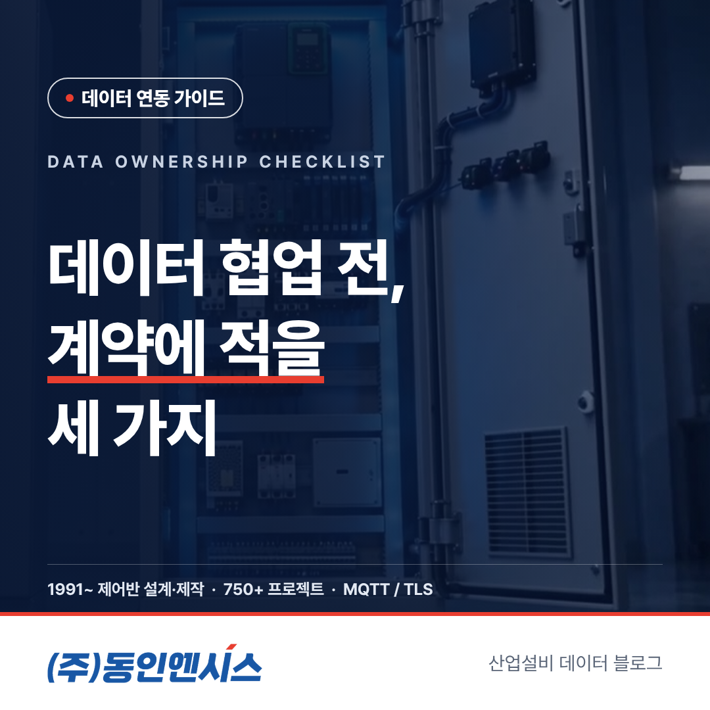
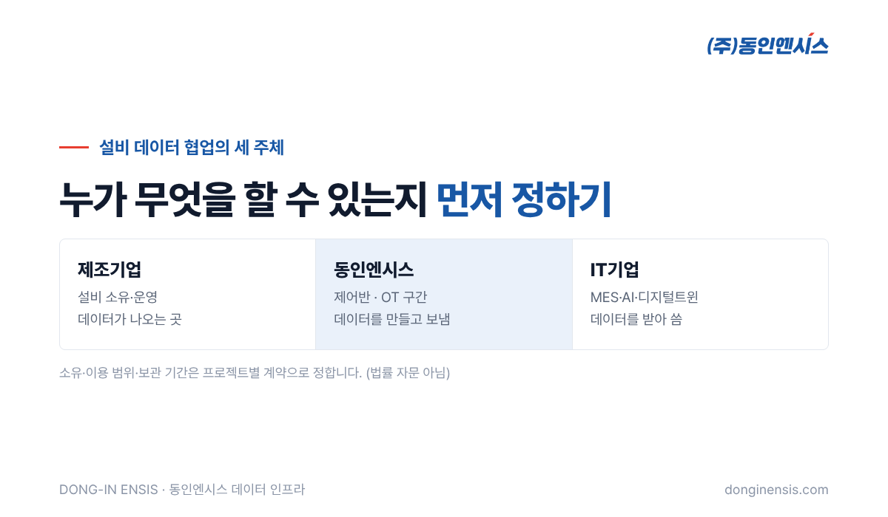
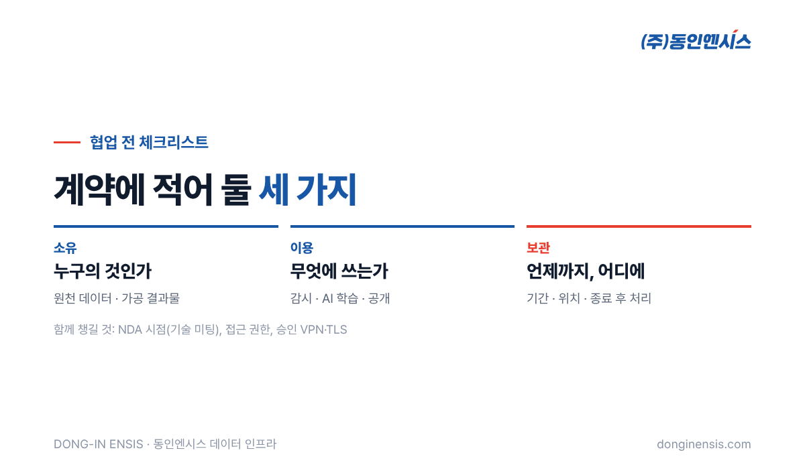

설비 데이터 협업은 대개 기술 이야기로 시작합니다. 어떤 통신을 쓸지, API는 어떻게 받을지, 화면은 누가 만들지. 그런데 프로젝트가 한참 진행된 뒤에 멈추는 이유는 기술보다 계약인 경우가 적지 않습니다. "이 데이터로 AI를 학습시켜도 되나요?" "프로젝트가 끝나면 데이터는 어떻게 되나요?" 같은 질문에 아무도 답을 정해 두지 않았기 때문입니다. 부산에서 제어반을 설계·제작하고 그 제어반의 설비 데이터를 IT기업 플랫폼으로 연결하는 동인엔시스가, 협업을 시작하기 전에 데이터 소유권 계약에서 정해 둘 세 가지를 체크리스트로 정리했습니다.
먼저 밝혀 둡니다. 이 글은 법률 자문이 아니라, 여러 협업 현장에서 자주 나오는 질문을 정리한 것입니다. 실제 계약 문구는 각 회사의 법무 검토를 거쳐 정하시기 바랍니다.
제조 현장의 데이터 프로젝트에는 대개 세 주체가 함께합니다.
| 주체 | 맡는 일 | 데이터와의 관계 |
|---|---|---|
| 제조기업 | 설비를 소유하고 운영 | 데이터가 나오는 곳 |
| 동인엔시스 | 제어반으로 OT 구간을 맡고 데이터를 만들어 전달 | 데이터를 만들고 보내는 쪽 |
| IT기업 | MES·AI·디지털트윈 플랫폼 운영 | 데이터를 받아 쓰는 쪽 |
세 주체가 각자 다른 이유로 데이터에 관여하기 때문에, 누가 무엇을 할 수 있는지를 처음부터 분명히 해 두어야 합니다. 동인엔시스는 데이터의 소유와 이용 범위, 보관 기간을 프로젝트마다 계약으로 정하는 것을 원칙으로 합니다.

가장 먼저 정할 것은 데이터의 주인이 누구인가입니다. 설비는 제조기업의 것이지만, 데이터를 만드는 제어반과 그것을 저장하는 서버, 분석하는 플랫폼은 다른 회사가 맡는 경우가 많습니다. 당연히 정해져 있을 것 같지만, 막상 글로 적어 보면 해석이 갈리는 부분입니다.
특히 두 번째 항목이 자주 문제가 됩니다. 원천 데이터와 그 데이터로 만든 AI 모델은 같은 것이 아니기 때문에, 어디까지를 누구의 것으로 볼지 미리 합의해 두는 것이 좋습니다. 예를 들어 IT기업이 여러 고객사의 데이터로 다듬은 분석 기능을 다른 고객사에도 쓰고 싶다면, 그 부분을 데이터 소유권 계약에 따로 적어 두어야 나중에 오해가 생기지 않습니다.
소유가 정해져도, 실제로 데이터를 쓰는 사람은 여럿입니다. 그래서 각 주체가 데이터를 어디에 써도 되는지를 구체적으로 적어야 합니다.
이용 범위는 넓게 적으면 나중에 신뢰 문제가 생기고, 좁게 적으면 개선과 확장이 막힙니다. 처음에는 본래 목적 중심으로 정하고, 필요할 때 범위를 넓히는 별도 합의를 하는 방식이 무난합니다. 범위를 넓힐 때마다 누가 요청했고 누가 동의했는지를 기록으로 남겨 두면, 담당자가 바뀌어도 합의의 맥락이 이어집니다.
Photorealistic photo of a meeting room in Korea with five professionals around a table, some in business casual and one in a factory work vest, printed documents and a laptop showing an abstract diagram of three connected boxes (no readable text), whiteboard in background with simple arrows, natural light, documentary style, no brand logos, no readable text. 3:2 landscape.
설비 데이터는 시간이 갈수록 쌓입니다. 1초 단위로 몇 년을 모으면 양도 많아지고, 어디에 얼마나 둘지가 비용과 보안 문제로 이어집니다. 그래서 보관은 '얼마나 오래'와 '어디에'를 함께 정해야 합니다.
계약 종료 뒤의 처리는 시작할 때 가장 소홀하게 다뤄지는 항목입니다. 하지만 협업이 끝날 때 가장 먼저 부딪히는 질문이기도 합니다. 끝을 미리 정해 두는 것이 오히려 제조기업이 안심하고 데이터를 내주게 만드는 장치가 됩니다. 데이터 소유권 계약에서 보관 기간과 종료 처리를 꼼꼼히 적는 이유입니다.
동인엔시스와 IT기업의 협업은 보통 협업 문의, 기술 미팅, 시연·테스트, 공동 프로젝트 순서로 진행됩니다. 비밀유지계약(NDA)은 필요하면 기술 미팅 단계에서 맺습니다. 연동에 필요한 세부 규격 문서도 이 계약이 맺어진 다음에 건네는 것을 원칙으로 합니다. 계약 전에는 큰 구조를, 계약 뒤에는 세부를 나누는 셈입니다.
누가 데이터에 접근할 수 있는지도 계약과 함께 정리하면 좋습니다. 동인엔시스는 데이터를 TLS로 암호화해 보내고, 원격 접속은 고객이 승인한 VPN으로만 연결합니다. 또 서버는 데이터를 받기만 할 뿐 설비를 직접 제어하지 않는 구조라, 데이터 접근 권한이 곧 설비 조작 권한으로 이어지지 않습니다. 제조기업 입장에서는 데이터를 내주는 일이 설비를 내주는 일과 분리되어 있다는 점이 계약 논의를 훨씬 가볍게 만듭니다.

| 항목 | 핵심 질문 |
|---|---|
| 소유 | 원천 데이터와 가공 결과물은 각각 누구의 것인가 |
| 이용 범위 | 감시 외에 AI 학습·비교·공개에 써도 되는가 |
| 보관 기간 | 얼마나, 어디에 두고, 끝나면 어떻게 처리하는가 |
| 함께 챙길 것 | NDA 시점, 접근 권한, 보안 구조 |
Photorealistic close-up photo of two Korean business people shaking hands over a table with a closed folder and a pen, one wearing a navy blazer and the other a light work jacket, factory office window softly blurred behind, warm light, no brand logos, no readable text. 3:2 landscape.
Q. 데이터 소유권 계약의 표준 양식이 있나요? 프로젝트마다 주체와 목적이 달라 하나의 양식으로 정하지 않습니다. 기술 미팅에서 세 주체가 함께 범위를 정리한 뒤 계약에 반영하는 방식을 권합니다.
Q. 시연·테스트 단계에서도 계약이 필요한가요? 샘플 데이터나 시연 장비 데이터로 테스트하는 단계라면 부담이 적지만, 실제 고객사 설비 데이터를 쓰기 시작하기 전에는 이용 범위를 정해 두는 것이 좋습니다.
Q. 계약이 끝나면 데이터는 어떻게 되나요? 반환이나 삭제 등 처리 방법은 계약에서 정한 대로 따릅니다. 그래서 시작할 때 미리 적어 두는 것이 중요합니다.
설비 데이터 협업에서 계약은 서로를 의심해서 쓰는 문서가 아니라, 오래 함께 일하기 위해 기대를 맞추는 문서입니다. 소유와 이용 범위, 보관 기간 세 가지만 처음에 분명히 해 두어도 프로젝트가 중간에 멈추는 일을 크게 줄일 수 있습니다.
협업 문의 051-862-3668 · dongin@donginmne.com
아래 질문 중 하나에 실제 경험으로 답해 본문 적당한 곳에 넣어 주세요. 사람이 직접 쓴 문장이 들어가면 네이버에서 저품질 위험이 줄고 노출에 도움이 됩니다.